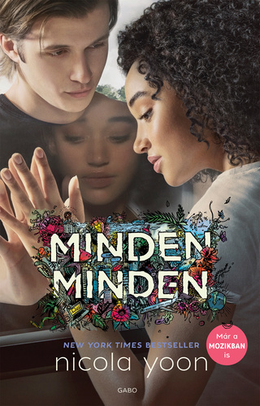

Nicola Yoon: Minden, minden 
Nagyon ritka, de nagyon híres betegségben szenvedek. Gyakorlatilag az egész világra allergiás vagyok. Sosem lépek ki a házból. Már tizenhét éve. Csak anyu és az ápolónőm, Carla van itt velem. Aztán egy napon egy költöztető cég teherautója áll meg a szomszéd ház előtt. Kinézek az ablakomon, és akkor meglátom őt. Magas, vékony, és csak feketét visel – fekete a pólója, a nadrágja, az edzőcipője, sőt még a kötött sapkája is, ami alól egyáltalán nem lóg ki a haja. Észreveszi, hogy őt figyelem, és megakad rajtam a tekintete. Csak nézzük egymást. Olly a neve. Lehet, hogy nem lehet megjósolni a jövőt, de azért ezt-azt mégis meg lehet. Például nagyjából biztos vagyok benne, hogy bele fogok szeretni Ollyba. És szinte biztos, hogy annak katasztrófa lesz a vége. Nicola Yoon Jamaicán és Brooklynban, Long Islanden nőtt fel. Jelenleg Los Angelesben, Kaliforniában él a férjével, a kötet illusztrátorával, és a lányával, akiket őrülten szeret. A Minden, minden az első regénye. David Yoon író és designer. Feleségével, Nicola Yoonnal Los Angelesben, Kaliforniában él. Történetekről beszélgetnek, és felolvasnak hároméves lányuknak, Pennynek. David illusztrálta a Minden, mindent.
Josh Malerman: Madarak a dobozban
Valami rémisztő dolog garázdálkodik odakint, amire nem szabad ránézni. Egyetlen pillantás elég ahhoz, hogy az ember őrült, kegyetlen gyilkossá váljon. Senki sem tudja, mi az, és honnan jött. A szörnyűséges hírek egyre gyakoribbá válnak. Majd a tévé elsötétül, a rádió elhallgat, és az internet is összeomlik. A telefonok elnémulnak. Az ablakon pedig nem lehet kinézni többé. Mára csak maréknyi túlélő maradt, köztük Malorie két gyermekével, akiket az egyetlen lehetséges módon nevel: a négy fal között. A folyóparti, elhagyatott ház ajtaja zárva, a függönyök behúzva, az ablakokra matracok szögelve. Egyetlen esélyük, hogy elmenekülnek egy másik helyre, ahol talán biztonságban lehetnek. De az előttük álló út elrettentő: harminc kilométer a folyón, egy evezős csónakban bekötött szemmel! Csak Malorie találékonyságára és a gyerekek éles hallására támaszkodhatnak. Egyetlen rossz döntés is végzetessé válhat. És valami követi őket. De vajon ember, állat vagy szörnyeteg? Josh Malerman lélegzetelállító debütálása egy letehetetlen, rémisztő és lebilincselő panoráma egy sarkaiból kifordult világról.
Suzanne Collins: Az éhezők viadala
Észak-Amerika romjain ma Panem országa, a ragyogó Kapitólium és a tizenkét távoli körzet fekszik. A Kapitólium kegyetlenül bánik Panem lakóival: minden évben, minden körzetből kisorsolnak egy-egy tizenkét és tizennyolc év közötti fiút és lányt, akiknek részt kell venniük Az Éhezők Viadalán. Az életre-halálra zajló küzdelmet élőben közvetíti a tévé. A tizenhat éves Katniss Everdeen egyedül él a húgával és az anyjával a Tizenkettedik Körzetben. Amikor a húgát kisorsolják, Katniss önként jelentkezik helyette a Viadalra, ez pedig felér egy halálos ítélettel. De Katniss már nem először néz farkasszemet a halállal – számára a túlélés a mindennapok része. Ha győzni akar, olyan döntéseket kell hoznia, ahol az életösztön szembe kerül az emberséggel, az élet pedig a szerelemmel.

Suzanne Collins: A Futótűz
A Kapitólium dühös.
A Kapitólium bosszúra éhes.
A Kapitólium vért akar látni.
És az igazi harc csak most kezdődik.
Katniss és Peeta megnyerték az Éhezők Viadalát, így ők és a családjaik megmenekültek az éhezéstől, de a fiatalok nem ülhetnek nyugodtan a babérjaikon. Vár rájuk a hosszú Győzelmi Körút, ismét csak a tévénézők árgus szeme előtt.
A kötelező udvariaskodás unalmát azonban döbbenet és félelem váltja fel, amikor hírét veszik, hogy lázadás készül a Kapitólium ellen. Snow elnök sosem habozott lesújtani az engedetlenekre, és most is ott csap le, ahol senki sem várja. Emberek halnak meg, családok lesznek földönfutók, Katniss és Peeta pedig újabb küzdelemre kényszerülnek, ahol a tétek még nagyobbak, mint korábban.
Paul Hoffman: Isten Balkeze
Idefigyeljenek. A Shotover dűlőn található Megváltó Menedék neve egy átkozott hazugság, mert megváltásból egy fikarcnyit nem talál ott az ember, menedéket pedig még kevésbé.” A Megváltók Menedéke egy hatalmas, elszigetelt hely, ahonnan hiányzik az öröm és a remény. A legtöbb lakója még kisfiúkorában került oda, minden esetleges szándékuk és akaratuk ellenére, hogy hosszú évekig legyenek kénytelenek elviselni a Megváltó Lordok brutális zsarnokságát, akiknek a kegyetlensége és erőszakossága egyetlen célt szolgál – a Felakasztott Megváltó kiengesztelését. Senki nem ismeri ki magát tökéletesen a Menedékben, annyira végeérhetetlenek és kanyargósak a folyosói – amelyeket a vallási hevület évszázadainak bűze tölt be. Az egyik ilyen folyosón egy fiú áll és a sötét ablakon keresztül az éppen beérkező legújabb lakókat bámulja. Talán tizennégy-tizenöt éves lehet – nem tudja biztosan, ahogy senki más sem. Már rég elfeledte az igazi nevét, de itt Cale-nek hívják. Nem emlékszik semmire a múltjából. És nem tud semmit a jövőjéről… Üdvözöljük a Halál Angyalát.

Suzanne Collins: A Kiválasztott
Bár minden ellene szólt, Katniss Everdeennek kétszer is sikerült élve kikerülnie az Éhezők Viadalából. Túlélt minden megpróbáltatást, de még mindig nincs biztonságban. Mert a Kapitólium bűnbakot keres a lázadás miatt. Snow elnök pedig egyértelművé tette: a Kapitólium haragja elől senki sem menekülhet. Sem Katniss családja, sem a barátai, sem pedig a 12. Körzet lakói. De közeledik a végső forradalom ideje. Amikor a nép végre szembeszáll a zsarnoksággal. És ebben a forradalomban Katnissnek döntő szerepe lesz. Az ő bátorságától, kitartásától és eltökéltségétől függ Panem jövője. Mert ő a kiválasztott. De maradt-e elég ereje hozzá, hogy megvívja az utolsó, mindent eldöntő harcot? Suzanne Collins trilógiája az utóbbi évek legnagyobb nemzetközi könyvsikere, amely hónapokon át vezette az eladási listákat a világ számos országában. 2012 márciusában pedig a mozikba kerül Az Éhezők Viadala filmváltozata, Jennifer Lawrence-szel a főszerepben.
Lissa Price: A Testbérlők
A Földet háború pusztította, emberek milliói haltak meg. S ebben a világban valóra válik az emberiség régi álma. Végre lehetséges egy másik személy testébe bújni. A 16 éves Callie rábukkan egy titokzatos helyre, ahol rászorult tinédzserek bérbe adhatják fiatal testüket a társadalom idős, de tehetős polgárainak. Amikor azonban a fejébe ültetett szerkezet meghibásodik, Callie öntudatára ébred, és dúsgazdag bérlőjének mesés életét kezdi élni.